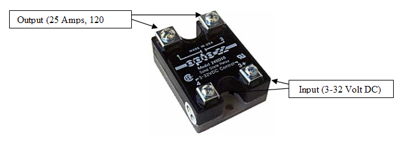

|
Home
| Profile
| Engineering Projects
| Animations
|
STOVETOP COMMUNICATION DEVICE
|

The purpose of the solid state relay (SSR) is to control the flow of electricity to the stove. The SSR has four terminals. The two upper terminals, terminals 1 and 2 are the output terminals and the lower terminals, terminals 3 and 4 are the input terminals. The ground wire (black wire) of the stove’s power cord is wired to terminals 1 and 2. The upper terminals can carry a maximum current of 25 Amps and a maximum voltage of 120 Volts. Terminals 3 and 4 are wired to the USB board; terminal 3 to the positive output of the USB module and terminal 4 to the ground of the USB module. Terminals 3 and 4 can receive a maximum input of 32 volts and 100 milliamps. The SSR operates by running a current across terminals 3 and 4, which completes the circuit between terminals 1 and 2 and allows electricity to the stove. The circuit between terminals 1 and 2 is completed when 0-100 milliamps at 3-32v are run across terminals 3 and 4. Therefore, as long as the USB module outputs a sufficient amount of current across terminals 3 and 4, the stove will operate. The stove will cease to operate when there is an insufficient amount of current across terminals 3 and 4.
|
|